8 Correlation and Regression
8.1 Introduction to Relationships Between Variables
In sport business analytics, we often want to understand and quantify relationships between variables. Does ticket price affect attendance? Can we predict merchandise sales from team performance? Do training hours correlate with athletic performance?
This chapter introduces two fundamental statistical techniques for examining relationships:
- Correlation: Measures the strength and direction of the relationship between two variables
- Regression: Predicts the value of one variable based on one or more other variables
These techniques are essential for data-driven decision making in sport organizations, allowing analysts to identify patterns, make predictions, and inform strategic decisions.
Key Terms Quick Reference
Correlation and regression terminology:
| Term | Definition | Example |
|---|---|---|
| Correlation | Measures strength and direction of relationship between two variables | r = 0.75 (strong positive) between wins and attendance |
| Correlation Coefficient (r) | Ranges from -1 to +1 | r = -0.60 means strong negative relationship |
| Positive Correlation | Both variables increase together | More wins → higher attendance |
| Negative Correlation | One increases, other decreases | Higher ticket price → lower attendance |
| Pearson’s r | Correlation for linear relationships | Relationship between study hours and test scores |
| Spearman’s rho | Correlation for ranked or non-linear data | Team rankings vs. revenue rankings |
| Regression | Predicting one variable from another(s) | Predict attendance from wins |
| Simple Regression | One predictor variable | Attendance = f(wins) |
| Multiple Regression | Multiple predictor variables | Attendance = f(wins, price, weather, day) |
| Dependent Variable (Y) | Outcome being predicted | Attendance (what we want to predict) |
| Independent Variable (X) | Predictor variable | Wins (what we use to predict) |
| Intercept (b₀) | Value of Y when X = 0 | Predicted attendance with 0 wins |
| Slope (b₁) | Change in Y for each unit change in X | Each win increases attendance by 500 |
| R-squared (R²) | Proportion of variance explained | R² = 0.64 means model explains 64% of variation |
| Residuals | Prediction errors (actual - predicted) | Predicted 45,000, actual 48,000, residual = 3,000 |
| Assumptions | Conditions required for valid regression | Linearity, normality, equal variance |
Why This Matters to Sport Business: Correlation tells you if a relationship exists (ticket price and attendance are related). Regression tells you how much (each $10 increase in price decreases attendance by 500). This lets you make data-driven pricing decisions instead of guessing.
8.2 Understanding Correlation
8.2.1 What is Correlation?
Correlation measures the strength and direction of the linear relationship between two continuous variables. It answers questions like:
- How strongly are two variables related?
- When one variable increases, does the other tend to increase or decrease?
- Can we quantify this relationship with a single number?
8.2.2 The Correlation Coefficient (r)
The correlation coefficient, denoted as r, ranges from -1 to +1:
- r = +1: Perfect positive correlation (as one variable increases, the other increases proportionally)
- r = 0: No linear correlation (no predictable relationship)
- r = -1: Perfect negative correlation (as one variable increases, the other decreases proportionally)
# Create examples of different correlation strengths
set.seed(123)
# Perfect positive correlation
perfect_pos <- data.frame(
x = 1:50,
y = 1:50 + rnorm(50, 0, 0.1)
)
# Moderate positive correlation
moderate_pos <- data.frame(
x = 1:50,
y = 1:50 + rnorm(50, 0, 10)
)
# No correlation
no_corr <- data.frame(
x = 1:50,
y = rnorm(50, 25, 10)
)
# Negative correlation
negative_corr <- data.frame(
x = 1:50,
y = 50:1 + rnorm(50, 0, 5)
)
# Create visualizations
par(mfrow = c(1, 4))
plot(perfect_pos$x, perfect_pos$y, main = "Strong Positive (r ≈ 1.0)",
xlab = "Variable X", ylab = "Variable Y", pch = 16, col = "blue")
plot(moderate_pos$x, moderate_pos$y, main = "Moderate Positive (r ≈ 0.6)",
xlab = "Variable X", ylab = "Variable Y", pch = 16, col = "darkgreen")
plot(no_corr$x, no_corr$y, main = "No Correlation (r ≈ 0)",
xlab = "Variable X", ylab = "Variable Y", pch = 16, col = "gray")
plot(negative_corr$x, negative_corr$y, main = "Negative (r ≈ -0.9)",
xlab = "Variable X", ylab = "Variable Y", pch = 16, col = "red")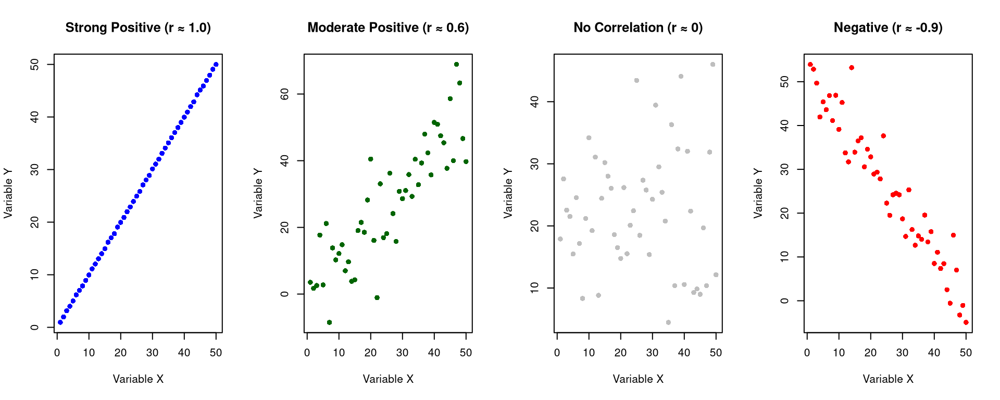
8.2.3 Interpreting Correlation Strength
The magnitude (absolute value) of r indicates the strength of the relationship:
| Correlation Coefficient | Interpretation |
|---|---|
| 0.00 to ±0.19 | Very weak |
| ±0.20 to ±0.39 | Weak |
| ±0.40 to ±0.59 | Moderate |
| ±0.60 to ±0.79 | Strong |
| ±0.80 to ±1.00 | Very strong |
Important: Correlation does NOT imply causation! A strong correlation between two variables doesn’t mean one causes the other.
8.2.4 Types of Correlation
8.2.4.1 Pearson Correlation
Pearson correlation (Pearson’s r) measures the linear relationship between two continuous variables. It’s the most commonly used correlation coefficient.
Assumptions: - Both variables are continuous (interval or ratio scale) - The relationship is linear - Data is normally distributed - No significant outliers
# Example: Relationship between study time and exam scores
study_data <- data.frame(
student_id = 1:20,
study_hours = c(2, 3, 5, 4, 6, 7, 3, 8, 5, 9,
6, 10, 4, 8, 7, 9, 11, 6, 10, 12),
exam_score = c(65, 68, 75, 72, 78, 82, 70, 85, 76, 88,
79, 90, 73, 86, 81, 87, 92, 77, 89, 94)
)
# Calculate Pearson correlation
pearson_result <- cor.test(study_data$study_hours,
study_data$exam_score,
method = "pearson")
# Display results
print(pearson_result)##
## Pearson's product-moment correlation
##
## data: study_data$study_hours and study_data$exam_score
## t = 35.36, df = 18, p-value < 2.2e-16
## alternative hypothesis: true correlation is not equal to 0
## 95 percent confidence interval:
## 0.9816766 0.9972419
## sample estimates:
## cor
## 0.9928787# Visualize the relationship
ggplot(study_data, aes(x = study_hours, y = exam_score)) +
geom_point(size = 3, color = "blue") +
geom_smooth(method = "lm", se = TRUE, color = "red") +
labs(title = "Relationship Between Study Hours and Exam Scores",
subtitle = paste("Pearson's r =", round(pearson_result$estimate, 3),
", p-value =", round(pearson_result$p.value, 4)),
x = "Study Hours",
y = "Exam Score") +
theme_minimal()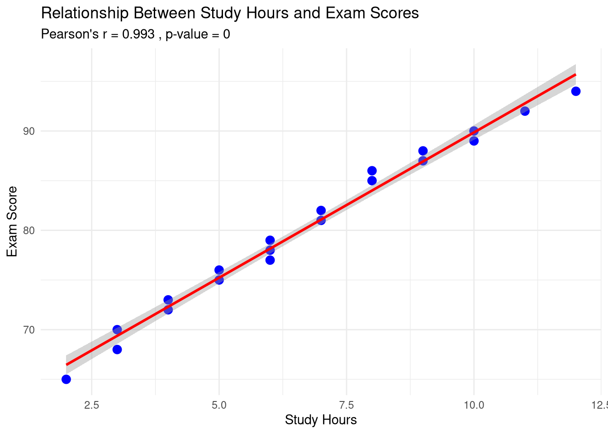
8.2.4.2 Spearman Correlation
Spearman’s rank correlation (Spearman’s rho) measures the monotonic relationship between two variables using their ranks rather than raw values.
Use Spearman when: - Data is ordinal (ranked) - The relationship is monotonic but not necessarily linear - Data contains outliers - Data is not normally distributed
# Example: Team rankings vs. revenue rankings
team_data <- data.frame(
team = paste("Team", 1:10),
performance_rank = c(1, 2, 3, 4, 5, 6, 7, 8, 9, 10),
revenue_rank = c(1, 3, 2, 5, 4, 7, 6, 9, 8, 10)
)
# Calculate Spearman correlation
spearman_result <- cor.test(team_data$performance_rank,
team_data$revenue_rank,
method = "spearman")
print(spearman_result)##
## Spearman's rank correlation rho
##
## data: team_data$performance_rank and team_data$revenue_rank
## S = 8, p-value < 2.2e-16
## alternative hypothesis: true rho is not equal to 0
## sample estimates:
## rho
## 0.95151528.2.5 Hypothesis Testing for Correlation
When we calculate a correlation coefficient, we often want to test whether the correlation is statistically significant.
Null Hypothesis (H₀): There is no correlation between the variables (ρ = 0) Alternative Hypothesis (H₁): There is a correlation between the variables (ρ ≠ 0)
The cor.test() function provides:
- r: The correlation coefficient
- p-value: The probability of observing this correlation if there truly is no relationship
- 95% confidence interval: Range of plausible values for the true correlation
# Sport business example: Ticket price vs. attendance
set.seed(456)
ticket_data <- data.frame(
game = 1:30,
avg_ticket_price = round(runif(30, 20, 80), 2),
attendance = round(15000 - (runif(30, 20, 80) * 50) + rnorm(30, 0, 1000))
)
# Test correlation
correlation_test <- cor.test(ticket_data$avg_ticket_price,
ticket_data$attendance,
method = "pearson")
cat("Correlation coefficient (r):", round(correlation_test$estimate, 3), "\n")## Correlation coefficient (r): 0.149## p-value: 0.4307cat("95% Confidence Interval:",
round(correlation_test$conf.int[1], 3), "to",
round(correlation_test$conf.int[2], 3), "\n")## 95% Confidence Interval: -0.223 to 0.484# Interpretation
if (correlation_test$p.value < 0.05) {
cat("\nConclusion: The correlation is statistically significant (p < 0.05).\n")
cat("There is a significant relationship between ticket price and attendance.\n")
} else {
cat("\nConclusion: The correlation is not statistically significant (p >= 0.05).\n")
}##
## Conclusion: The correlation is not statistically significant (p >= 0.05).# Visualize
ggplot(ticket_data, aes(x = avg_ticket_price, y = attendance)) +
geom_point(size = 3, alpha = 0.6) +
geom_smooth(method = "lm", se = TRUE, color = "darkblue") +
labs(title = "Ticket Price vs. Attendance",
subtitle = paste("r =", round(correlation_test$estimate, 3),
", p =", round(correlation_test$p.value, 4)),
x = "Average Ticket Price ($)",
y = "Attendance") +
theme_minimal()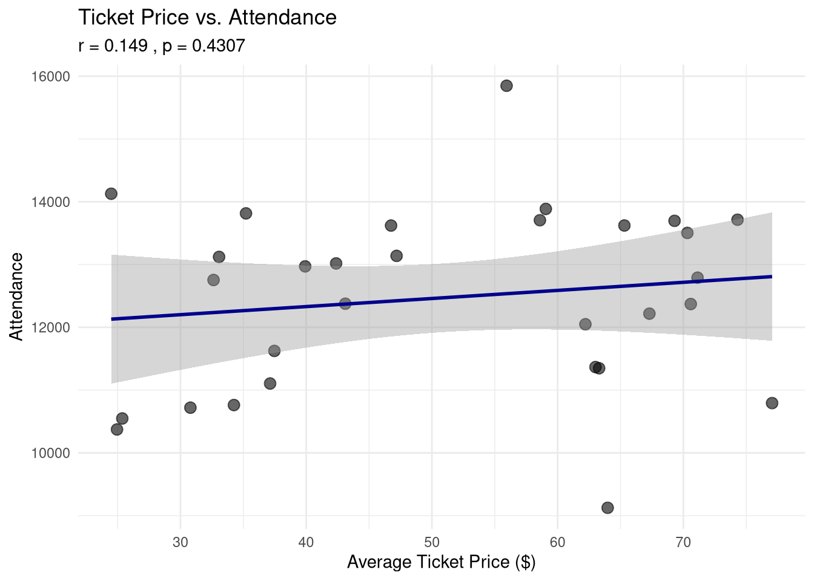
8.3 Simple Linear Regression
While correlation tells us about the strength and direction of a relationship, regression allows us to make predictions and quantify the relationship with an equation.
8.3.1 What is Simple Linear Regression?
Simple linear regression models the relationship between: - One independent variable (IV): The predictor variable (X) - One dependent variable (DV): The outcome variable (Y)
The regression equation is: Y = b₀ + b₁X
Where: - Y: Predicted value of the dependent variable - b₀: Y-intercept (value of Y when X = 0) - b₁: Slope (change in Y for each one-unit change in X) - X: Value of the independent variable
8.3.2 Conducting Simple Regression in R
# Example: Predicting game attendance from team wins
set.seed(789)
team_performance <- data.frame(
team = paste("Team", 1:25),
wins = sample(40:90, 25, replace = TRUE),
avg_attendance = sample(12000:28000, 25, replace = TRUE)
)
# Add some relationship
team_performance$avg_attendance <- 8000 + (team_performance$wins * 200) +
rnorm(25, 0, 2000)
# Build regression model
model1 <- lm(avg_attendance ~ wins, data = team_performance)
# Display summary
summary(model1)##
## Call:
## lm(formula = avg_attendance ~ wins, data = team_performance)
##
## Residuals:
## Min 1Q Median 3Q Max
## -6079.6 -1150.1 -177.9 1373.9 3344.4
##
## Coefficients:
## Estimate Std. Error t value Pr(>|t|)
## (Intercept) 8451.07 1987.81 4.251 0.000301 ***
## wins 193.86 26.87 7.214 2.41e-07 ***
## ---
## Signif. codes: 0 '***' 0.001 '**' 0.01 '*' 0.05 '.' 0.1 ' ' 1
##
## Residual standard error: 2231 on 23 degrees of freedom
## Multiple R-squared: 0.6935, Adjusted R-squared: 0.6802
## F-statistic: 52.04 on 1 and 23 DF, p-value: 2.414e-078.3.3 Interpreting Regression Output
The regression output provides several key pieces of information:
8.3.3.1 1. Coefficients
## (Intercept) wins
## 8451.0739 193.8569- Intercept (b₀): The predicted attendance when wins = 0
- Slope (b₁): For each additional win, attendance increases by this amount
8.3.3.2 2. R-squared (R²)
R-squared indicates the proportion of variance in the dependent variable explained by the independent variable.
# Extract R-squared
r_squared <- summary(model1)$r.squared
adj_r_squared <- summary(model1)$adj.r.squared
cat("R-squared:", round(r_squared, 4), "\n")## R-squared: 0.6935## Adjusted R-squared: 0.6802cat("\nInterpretation:", round(r_squared * 100, 2),
"% of the variance in attendance is explained by wins.\n")##
## Interpretation: 69.35 % of the variance in attendance is explained by wins.R² ranges from 0 to 1: - R² = 0: The model explains none of the variance - R² = 1: The model explains all of the variance - R² = 0.70: The model explains 70% of the variance
8.3.4 Making Predictions
Once we have a regression model, we can make predictions:
# Predict attendance for teams with specific win totals
new_teams <- data.frame(wins = c(50, 65, 80))
predictions <- predict(model1, newdata = new_teams, interval = "confidence")
results <- cbind(new_teams, predictions)
print(results)## wins fit lwr upr
## 1 50 18143.92 16608.03 19679.81
## 2 65 21051.77 20048.20 22055.34
## 3 80 23959.62 22936.84 24982.41##
## Example interpretation:cat("A team with 65 wins is predicted to have an average attendance of",
round(results[2, "fit"]), "fans.\n")## A team with 65 wins is predicted to have an average attendance of 21052 fans.8.3.5 Visualizing the Regression Line
ggplot(team_performance, aes(x = wins, y = avg_attendance)) +
geom_point(size = 3, alpha = 0.6) +
geom_smooth(method = "lm", se = TRUE, color = "darkred") +
labs(title = "Simple Linear Regression: Wins vs. Attendance",
subtitle = paste("R² =", round(summary(model1)$r.squared, 3)),
x = "Number of Wins",
y = "Average Attendance") +
theme_minimal()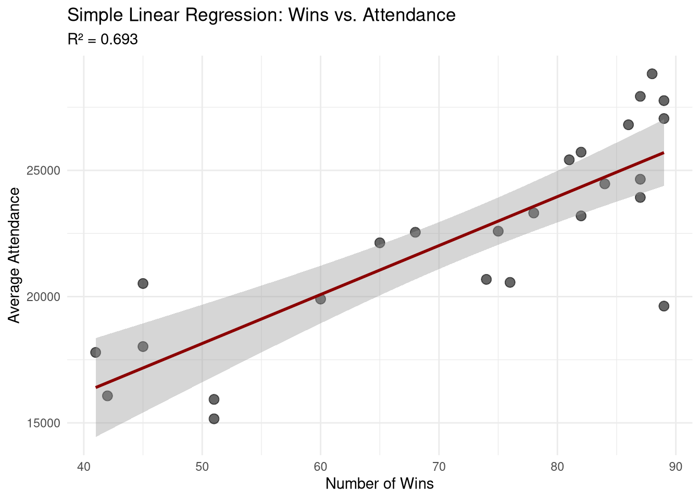
8.4 Multiple Regression
8.4.1 What is Multiple Regression?
Multiple regression extends simple regression by including two or more independent variables to predict a single dependent variable.
The equation is: Y = b₀ + b₁X₁ + b₂X₂ + … + bₖXₖ
Where: - Y: Predicted value of the dependent variable - b₀: Y-intercept - b₁, b₂, …, bₖ: Coefficients for each independent variable - X₁, X₂, …, Xₖ: Independent variables
8.4.2 Why Use Multiple Regression?
In sport business, outcomes are rarely determined by a single factor:
- Attendance might depend on: team performance, ticket price, weather, day of week, opponent quality
- Player salary might depend on: points per game, assists, rebounds, experience, age
- Merchandise sales might depend on: team wins, star player presence, marketing spend, social media engagement
Multiple regression allows us to: 1. Control for confounding variables 2. Identify the unique contribution of each predictor 3. Make more accurate predictions 4. Understand complex relationships
8.4.3 Conducting Multiple Regression in R
# Example: Predicting ticket sales from multiple factors
set.seed(101)
ticket_sales_data <- data.frame(
game_id = 1:50,
team_wins = sample(35:85, 50, replace = TRUE),
opponent_rank = sample(1:30, 50, replace = TRUE),
ticket_price = round(runif(50, 25, 75), 2),
day_of_week = sample(c("Weekday", "Weekend"), 50, replace = TRUE)
)
# Create dependent variable with multiple influences
ticket_sales_data$tickets_sold <-
5000 + # Baseline
(ticket_sales_data$team_wins * 50) + # Effect of team performance
(-ticket_sales_data$opponent_rank * 20) + # Effect of opponent quality
(-ticket_sales_data$ticket_price * 30) + # Effect of price
ifelse(ticket_sales_data$day_of_week == "Weekend", 2000, 0) + # Weekend boost
rnorm(50, 0, 1000) # Random variation
# Build multiple regression model
model2 <- lm(tickets_sold ~ team_wins + opponent_rank + ticket_price + day_of_week,
data = ticket_sales_data)
# Display summary
summary(model2)##
## Call:
## lm(formula = tickets_sold ~ team_wins + opponent_rank + ticket_price +
## day_of_week, data = ticket_sales_data)
##
## Residuals:
## Min 1Q Median 3Q Max
## -2084.83 -636.01 -73.73 549.29 2115.27
##
## Coefficients:
## Estimate Std. Error t value Pr(>|t|)
## (Intercept) 4483.665 721.087 6.218 1.48e-07 ***
## team_wins 64.066 10.062 6.367 8.90e-08 ***
## opponent_rank -14.353 14.373 -0.999 0.323351
## ticket_price -38.011 9.075 -4.188 0.000129 ***
## day_of_weekWeekend 1859.475 265.531 7.003 1.01e-08 ***
## ---
## Signif. codes: 0 '***' 0.001 '**' 0.01 '*' 0.05 '.' 0.1 ' ' 1
##
## Residual standard error: 885.2 on 45 degrees of freedom
## Multiple R-squared: 0.7579, Adjusted R-squared: 0.7364
## F-statistic: 35.22 on 4 and 45 DF, p-value: 2.487e-138.4.4 Interpreting Multiple Regression Output
8.4.4.1 Coefficients in Multiple Regression
Each coefficient represents the change in Y associated with a one-unit change in that predictor, holding all other predictors constant.
# Extract and display coefficients
coef_table <- summary(model2)$coefficients
print(round(coef_table, 4))## Estimate Std. Error t value Pr(>|t|)
## (Intercept) 4483.6651 721.0870 6.2179 0.0000
## team_wins 64.0656 10.0624 6.3668 0.0000
## opponent_rank -14.3526 14.3734 -0.9986 0.3234
## ticket_price -38.0106 9.0752 -4.1884 0.0001
## day_of_weekWeekend 1859.4750 265.5307 7.0029 0.0000##
## Interpretation:cat("- For each additional team win, ticket sales increase by",
round(coef_table["team_wins", "Estimate"]), "tickets (holding other factors constant)\n")## - For each additional team win, ticket sales increase by 64 tickets (holding other factors constant)cat("- For each $1 increase in ticket price, ticket sales decrease by",
abs(round(coef_table["ticket_price", "Estimate"])), "tickets\n")## - For each $1 increase in ticket price, ticket sales decrease by 38 ticketscat("- Weekend games sell",
round(coef_table["day_of_weekWeekend", "Estimate"]),
"more tickets than weekday games\n")## - Weekend games sell 1859 more tickets than weekday games8.4.4.2 R-squared in Multiple Regression
## R-squared: 0.7579## Adjusted R-squared: 0.7364cat("\nInterpretation:",
round(summary(model2)$r.squared * 100, 2),
"% of the variance in ticket sales is explained by the model.\n")##
## Interpretation: 75.79 % of the variance in ticket sales is explained by the model.Note: Use Adjusted R² when comparing models with different numbers of predictors, as it penalizes for adding unnecessary variables.
8.4.5 Standardized Coefficients
When predictors are on different scales, we can standardize them to compare their relative importance:
# Standardize continuous predictors
ticket_sales_data$team_wins_z <- scale(ticket_sales_data$team_wins)
ticket_sales_data$opponent_rank_z <- scale(ticket_sales_data$opponent_rank)
ticket_sales_data$ticket_price_z <- scale(ticket_sales_data$ticket_price)
ticket_sales_data$tickets_sold_z <- scale(ticket_sales_data$tickets_sold)
# Run standardized regression
model3 <- lm(tickets_sold_z ~ team_wins_z + opponent_rank_z + ticket_price_z + day_of_week,
data = ticket_sales_data)
cat("Standardized Coefficients:\n")## Standardized Coefficients:## (Intercept) team_wins_z opponent_rank_z ticket_price_z
## -0.4314 0.4899 -0.0747 -0.3119
## day_of_weekWeekend
## 1.0785##
## Interpretation:## The standardized coefficients show which predictors have the strongest effect.## Larger absolute values indicate stronger predictors.8.4.6 Model Diagnostics
It’s important to check whether regression assumptions are met:
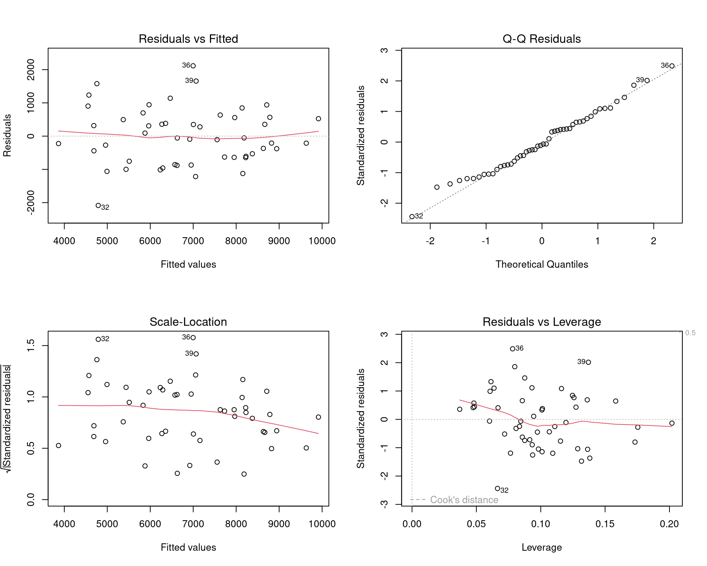
Key diagnostics: 1. Residuals vs Fitted: Check for linearity (should be randomly scattered) 2. Q-Q Plot: Check for normality of residuals (should follow diagonal line) 3. Scale-Location: Check for equal variance (should be horizontal) 4. Residuals vs Leverage: Identify influential outliers
8.4.7 Comparing Models
# Compare simple vs. multiple regression
model_simple <- lm(tickets_sold ~ team_wins, data = ticket_sales_data)
model_multiple <- lm(tickets_sold ~ team_wins + opponent_rank + ticket_price + day_of_week,
data = ticket_sales_data)
# ANOVA comparison
anova(model_simple, model_multiple)## Analysis of Variance Table
##
## Model 1: tickets_sold ~ team_wins
## Model 2: tickets_sold ~ team_wins + opponent_rank + ticket_price + day_of_week
## Res.Df RSS Df Sum of Sq F Pr(>F)
## 1 48 95323236
## 2 45 35259513 3 60063722 25.552 8.365e-10 ***
## ---
## Signif. codes: 0 '***' 0.001 '**' 0.01 '*' 0.05 '.' 0.1 ' ' 1# Compare R-squared values
cat("\nSimple Model R²:", round(summary(model_simple)$r.squared, 4), "\n")##
## Simple Model R²: 0.3455## Multiple Model R²: 0.7579cat("\nThe multiple regression model explains",
round((summary(model_multiple)$r.squared - summary(model_simple)$r.squared) * 100, 2),
"% more variance than the simple model.\n")##
## The multiple regression model explains 41.24 % more variance than the simple model.8.5 Sport Business Applications
8.5.1 Example 1: Player Performance Analysis
# Analyze relationship between training metrics and game performance
# Using Lahman baseball data
data(Batting)
# Filter recent seasons and regular players
recent_batting <- Batting %>%
filter(yearID >= 2015, AB >= 400) %>%
mutate(
batting_avg = H / AB,
slugging = (H + X2B + 2*X3B + 3*HR) / AB,
obp = (H + BB + HBP) / (AB + BB + HBP + SF)
)
# Correlation matrix
performance_vars <- recent_batting %>%
select(batting_avg, HR, RBI, SB, slugging, obp) %>%
na.omit()
correlation_matrix <- cor(performance_vars)
print(round(correlation_matrix, 3))## batting_avg HR RBI SB slugging obp
## batting_avg 1.000 0.123 0.315 0.146 0.549 0.714
## HR 0.123 1.000 0.832 -0.130 0.840 0.380
## RBI 0.315 0.832 1.000 -0.111 0.756 0.443
## SB 0.146 -0.130 -0.111 1.000 -0.061 0.063
## slugging 0.549 0.840 0.756 -0.061 1.000 0.653
## obp 0.714 0.380 0.443 0.063 0.653 1.000# Visualize correlation matrix
library(reshape2)
melted_corr <- melt(correlation_matrix)
ggplot(melted_corr, aes(x = Var1, y = Var2, fill = value)) +
geom_tile() +
geom_text(aes(label = round(value, 2)), color = "white") +
scale_fill_gradient2(low = "blue", mid = "white", high = "red",
midpoint = 0, limits = c(-1, 1)) +
labs(title = "Correlation Matrix: Baseball Performance Metrics",
x = "", y = "", fill = "Correlation") +
theme_minimal() +
theme(axis.text.x = element_text(angle = 45, hjust = 1))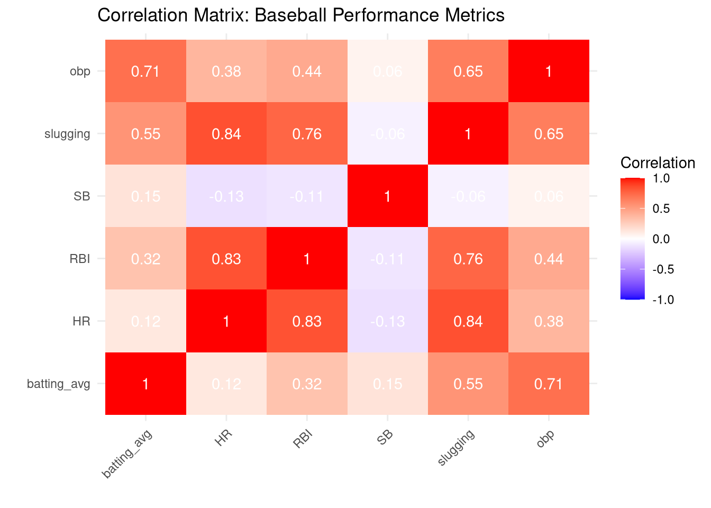
8.5.2 Example 2: Predicting Attendance
# Comprehensive attendance prediction model
set.seed(2024)
season_data <- data.frame(
game_number = 1:81,
wins_to_date = cumsum(sample(0:1, 81, replace = TRUE, prob = c(0.45, 0.55))),
temperature = round(rnorm(81, 75, 10)),
day_of_week = sample(c("Weekday", "Weekend"), 81, replace = TRUE, prob = c(0.7, 0.3)),
promotion = sample(c("Yes", "No"), 81, replace = TRUE, prob = c(0.2, 0.8)),
opponent_quality = sample(1:10, 81, replace = TRUE)
)
# Calculate winning percentage
season_data$win_pct <- season_data$wins_to_date / season_data$game_number
# Generate attendance with realistic influences
season_data$attendance <-
15000 + # Baseline
(season_data$win_pct * 10000) + # Team performance
(season_data$temperature * 20) + # Weather effect
ifelse(season_data$day_of_week == "Weekend", 3000, 0) + # Weekend boost
ifelse(season_data$promotion == "Yes", 2500, 0) + # Promotion effect
(season_data$opponent_quality * 300) + # Opponent draw
rnorm(81, 0, 1500) # Random variation
# Build prediction model
attendance_model <- lm(attendance ~ win_pct + temperature + day_of_week +
promotion + opponent_quality,
data = season_data)
summary(attendance_model)##
## Call:
## lm(formula = attendance ~ win_pct + temperature + day_of_week +
## promotion + opponent_quality, data = season_data)
##
## Residuals:
## Min 1Q Median 3Q Max
## -2928.7 -1021.2 -83.0 929.1 3902.1
##
## Coefficients:
## Estimate Std. Error t value Pr(>|t|)
## (Intercept) 17569.50 1598.06 10.994 < 2e-16 ***
## win_pct 9105.19 2320.90 3.923 0.000192 ***
## temperature -11.41 14.55 -0.784 0.435503
## day_of_weekWeekend 3225.83 382.64 8.430 1.81e-12 ***
## promotionYes 1796.64 382.39 4.698 1.16e-05 ***
## opponent_quality 374.50 58.74 6.376 1.34e-08 ***
## ---
## Signif. codes: 0 '***' 0.001 '**' 0.01 '*' 0.05 '.' 0.1 ' ' 1
##
## Residual standard error: 1523 on 75 degrees of freedom
## Multiple R-squared: 0.652, Adjusted R-squared: 0.6288
## F-statistic: 28.11 on 5 and 75 DF, p-value: 6.27e-16# Predict attendance for upcoming games
upcoming_games <- data.frame(
win_pct = c(0.550, 0.550, 0.550),
temperature = c(78, 82, 68),
day_of_week = c("Weekday", "Weekend", "Weekend"),
promotion = c("No", "Yes", "No"),
opponent_quality = c(5, 8, 3)
)
predictions <- predict(attendance_model, newdata = upcoming_games,
interval = "prediction")
forecast <- cbind(upcoming_games, round(predictions))
print(forecast)## win_pct temperature day_of_week promotion opponent_quality fit lwr upr
## 1 0.55 78 Weekday No 5 23560 20467 26653
## 2 0.55 82 Weekend Yes 8 29660 26460 32861
## 3 0.55 68 Weekend No 3 26151 23035 292678.5.3 Example 3: Salary Prediction
# Predict player salaries based on performance
# Using simulated MLB salary data based on 2016 statistics
library(tidyverse)
library(Lahman)
# Load batting data
data(Batting)
batting_2016 <- Batting %>%
filter(yearID == 2016, AB >= 400)
# Create simulated salary data based on performance
# (In practice, you would use actual salary data from sources like Spotrac)
set.seed(123)
player_economics <- batting_2016 %>%
mutate(
batting_avg = H / AB,
# Simulate salaries based on performance metrics plus random variation
base_salary = 500000,
hr_bonus = HR * 50000,
rbi_bonus = RBI * 10000,
avg_bonus = (batting_avg - 0.250) * 5000000,
random_component = rnorm(n(), mean = 0, sd = 1000000),
salary = pmax(base_salary + hr_bonus + rbi_bonus + avg_bonus + random_component,
500000)
) %>%
select(playerID, salary, AB, H, HR, RBI, batting_avg)
# Build salary prediction model
salary_model <- lm(log(salary) ~ batting_avg + HR + RBI,
data = player_economics)
summary(salary_model)##
## Call:
## lm(formula = log(salary) ~ batting_avg + HR + RBI, data = player_economics)
##
## Residuals:
## Min 1Q Median 3Q Max
## -1.53396 -0.22739 0.06133 0.31838 0.96929
##
## Coefficients:
## Estimate Std. Error t value Pr(>|t|)
## (Intercept) 12.776009 0.373571 34.200 < 2e-16 ***
## batting_avg 4.152748 1.475194 2.815 0.00545 **
## HR 0.030854 0.006678 4.620 7.52e-06 ***
## RBI 0.000112 0.003141 0.036 0.97160
## ---
## Signif. codes: 0 '***' 0.001 '**' 0.01 '*' 0.05 '.' 0.1 ' ' 1
##
## Residual standard error: 0.4735 on 171 degrees of freedom
## Multiple R-squared: 0.3323, Adjusted R-squared: 0.3206
## F-statistic: 28.37 on 3 and 171 DF, p-value: 6.149e-15##
## Key insights from salary prediction model:cat("- Each additional home run is associated with approximately a",
round((exp(coef(salary_model)["HR"]) - 1) * 100, 2),
"% increase in salary\n")## - Each additional home run is associated with approximately a 3.13 % increase in salary## - R-squared: 0.3328.6 Ticket Pricing Analytics with Regression
Pricing is one of the most critical decisions in sport business. Set prices too high and you lose fans; too low and you leave revenue on the table. Regression analysis allows us to make data-driven pricing decisions by understanding the relationship between price and demand.
8.6.1 The Pricing Challenge
Sport organizations must balance competing objectives:
- Maximize revenue: Find the price point that generates the most total revenue
- Fill the venue: Higher attendance creates better atmosphere and ancillary revenue
- Remain accessible: Keep tickets affordable for fans
- Segment appropriately: Different sections, games, and customer types warrant different prices
Regression helps us answer: 1. How does ticket price affect attendance (demand)? 2. What is the optimal price to maximize revenue? 3. How do other factors (opponent, day, weather) influence the price-attendance relationship?
8.6.2 Simple Pricing Analysis: Price vs. Attendance
Let’s start with a fundamental question: How does ticket price affect attendance?
# Create realistic ticket pricing data
set.seed(42)
ticket_data <- data.frame(
game_id = 1:50,
avg_ticket_price = round(runif(50, 25, 85), 2)
)
# Attendance decreases as price increases (negative relationship)
# Formula: Attendance = 75000 - (price × 500) + random noise
ticket_data <- ticket_data %>%
mutate(
attendance = pmax(
75000 - (avg_ticket_price * 500) + rnorm(50, 0, 3000),
15000 # Minimum attendance floor
)
) %>%
mutate(attendance = round(attendance))
# View sample
head(ticket_data, 10)## game_id avg_ticket_price attendance
## 1 1 79.89 33764
## 2 2 81.22 33618
## 3 3 42.17 48626
## 4 4 74.83 38965
## 5 5 63.50 41330
## 6 6 56.15 48291
## 7 7 69.20 42515
## 8 8 33.08 61565
## 9 9 64.42 40963
## 10 10 67.30 42865# Visualize relationship
ggplot(ticket_data, aes(x = avg_ticket_price, y = attendance)) +
geom_point(size = 3, alpha = 0.6, color = "darkblue") +
geom_smooth(method = "lm", se = TRUE, color = "red") +
labs(title = "Relationship Between Ticket Price and Attendance",
x = "Average Ticket Price ($)",
y = "Attendance") +
scale_y_continuous(labels = comma_format()) +
scale_x_continuous(labels = dollar_format()) +
theme_minimal()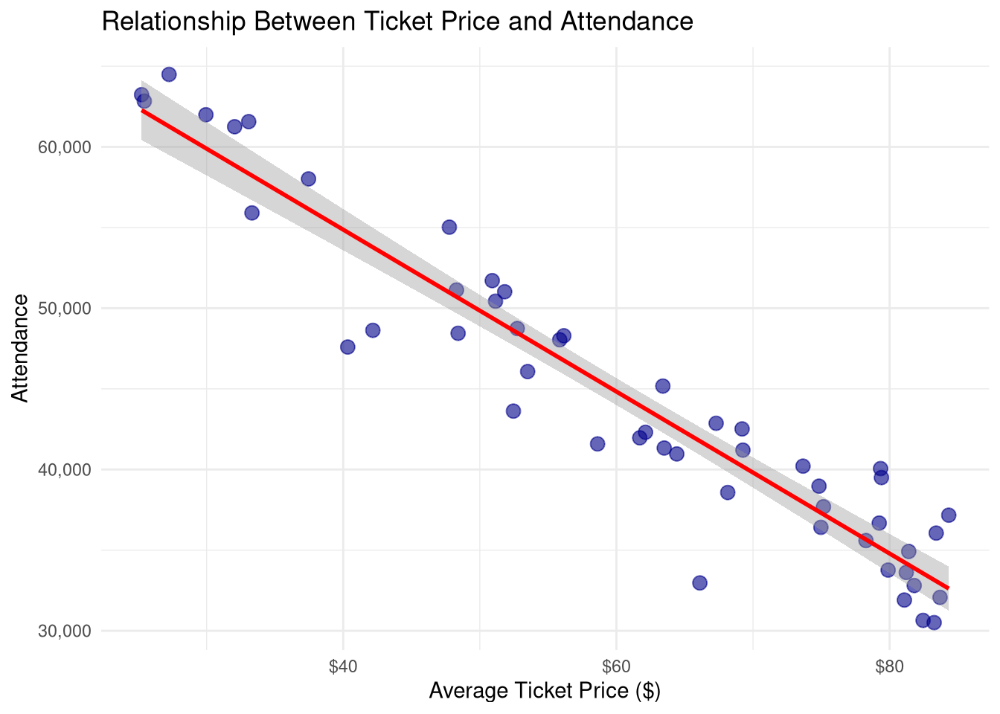
8.6.3 Building the Pricing Model
8.6.3.1 Step 1: Simple Linear Regression
# Build regression model: Attendance ~ Price
price_model_simple <- lm(attendance ~ avg_ticket_price, data = ticket_data)
summary(price_model_simple)##
## Call:
## lm(formula = attendance ~ avg_ticket_price, data = ticket_data)
##
## Residuals:
## Min 1Q Median 3Q Max
## -8794.6 -1939.9 565.7 2072.5 4937.5
##
## Coefficients:
## Estimate Std. Error t value Pr(>|t|)
## (Intercept) 74946.10 1466.03 51.12 <2e-16 ***
## avg_ticket_price -501.97 23.07 -21.76 <2e-16 ***
## ---
## Signif. codes: 0 '***' 0.001 '**' 0.01 '*' 0.05 '.' 0.1 ' ' 1
##
## Residual standard error: 2942 on 48 degrees of freedom
## Multiple R-squared: 0.9079, Adjusted R-squared: 0.906
## F-statistic: 473.4 on 1 and 48 DF, p-value: < 2.2e-16# Extract key results
intercept <- coef(price_model_simple)[1]
slope <- coef(price_model_simple)[2]
r_squared <- summary(price_model_simple)$r.squared
cat("\n=== MODEL INTERPRETATION ===\n")##
## === MODEL INTERPRETATION ===## Equation: Attendance = 74946 + -502 × Price## Interpretation:## - Intercept: 74946 → Predicted attendance if tickets were freecat("- Slope:", round(slope), "→ For each $1 price increase, attendance decreases by",
abs(round(slope)), "fans\n")## - Slope: -502 → For each $1 price increase, attendance decreases by 502 fanscat("- R-squared:", round(r_squared, 3), "→ Price explains",
round(r_squared * 100, 1), "% of attendance variation\n\n")## - R-squared: 0.908 → Price explains 90.8 % of attendance variation# Confidence interval for slope
conf_int <- confint(price_model_simple, "avg_ticket_price", level = 0.95)
cat("95% Confidence Interval for price effect:",
round(conf_int[1]), "to", round(conf_int[2]), "\n")## 95% Confidence Interval for price effect: -548 to -4568.6.3.2 Step 2: Calculate Revenue Impact
The goal isn’t maximum attendance—it’s maximum revenue. Let’s find the optimal price:
# Add predicted attendance and revenue to data
ticket_data <- ticket_data %>%
mutate(
predicted_attendance = predict(price_model_simple, newdata = .),
actual_revenue = avg_ticket_price * attendance,
predicted_revenue = avg_ticket_price * predicted_attendance
)
# Test multiple price points to find revenue-maximizing price
price_scenarios <- data.frame(
test_price = seq(from = 25, to = 85, by = 5)
)
# Predict attendance and calculate revenue for each price
price_scenarios <- price_scenarios %>%
mutate(
predicted_attendance = predict(price_model_simple, newdata = data.frame(avg_ticket_price = test_price)),
predicted_revenue = test_price * predicted_attendance
)
# Find optimal price
optimal_price_row <- price_scenarios[which.max(price_scenarios$predicted_revenue), ]
cat("\n=== REVENUE OPTIMIZATION ===\n")##
## === REVENUE OPTIMIZATION ===## Optimal ticket price: $ 75cat("Predicted attendance:", format(round(optimal_price_row$predicted_attendance), big.mark = ","), "\n")## Predicted attendance: 37,298cat("Predicted revenue: $", format(round(optimal_price_row$predicted_revenue), big.mark = ","), "\n\n")## Predicted revenue: $ 2,797,352# Visualize revenue curve
ggplot(price_scenarios, aes(x = test_price, y = predicted_revenue)) +
geom_line(color = "darkgreen", size = 1.5) +
geom_point(data = optimal_price_row, aes(x = test_price, y = predicted_revenue),
color = "red", size = 5) +
geom_vline(xintercept = optimal_price_row$test_price,
linetype = "dashed", color = "red") +
annotate("text", x = optimal_price_row$test_price + 8,
y = optimal_price_row$predicted_revenue,
label = paste("Optimal: $", optimal_price_row$test_price),
color = "red", fontface = "bold") +
labs(title = "Revenue Optimization Curve",
subtitle = "Finding the revenue-maximizing price point",
x = "Ticket Price ($)",
y = "Predicted Revenue ($)") +
scale_x_continuous(labels = dollar_format()) +
scale_y_continuous(labels = dollar_format()) +
theme_minimal()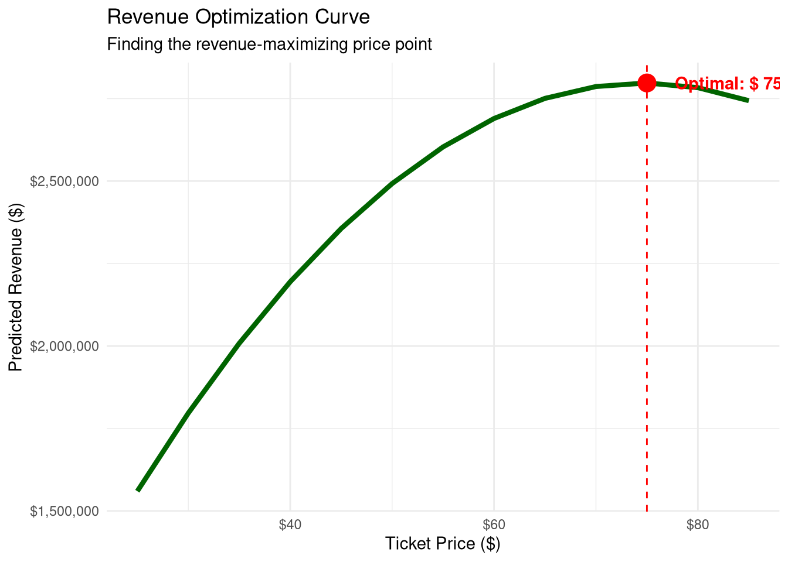
8.6.4 Price Elasticity of Demand
Price elasticity measures how sensitive demand is to price changes:
Elasticity = % Change in Quantity / % Change in Price
- Elastic demand (|E| > 1): Quantity changes MORE than price → Lower prices increase revenue
- Inelastic demand (|E| < 1): Quantity changes LESS than price → Higher prices increase revenue
- Unit elastic (|E| = 1): Changes offset each other → Revenue stays constant
# Calculate elasticity at different price points
calculate_elasticity <- function(price, slope, attendance) {
# Point elasticity formula: E = (dQ/dP) × (P/Q)
# dQ/dP is our regression slope
elasticity <- slope * (price / attendance)
return(elasticity)
}
# Calculate elasticity for each observed price
ticket_data <- ticket_data %>%
mutate(
elasticity = calculate_elasticity(avg_ticket_price, slope, predicted_attendance),
elasticity_type = case_when(
abs(elasticity) > 1 ~ "Elastic (price sensitive)",
abs(elasticity) < 1 ~ "Inelastic (price insensitive)",
TRUE ~ "Unit elastic"
)
)
# Elasticity at different price levels
elasticity_summary <- ticket_data %>%
mutate(price_level = case_when(
avg_ticket_price < 40 ~ "Low ($25-39)",
avg_ticket_price < 60 ~ "Medium ($40-59)",
TRUE ~ "High ($60+)"
)) %>%
group_by(price_level) %>%
summarize(
avg_price = mean(avg_ticket_price),
avg_elasticity = mean(elasticity),
elasticity_type = first(elasticity_type)
)
cat("\n=== PRICE ELASTICITY ANALYSIS ===\n")##
## === PRICE ELASTICITY ANALYSIS ===## # A tibble: 3 × 4
## price_level avg_price avg_elasticity elasticity_type
## <chr> <dbl> <dbl> <chr>
## 1 High ($60+) 74.7 -1.02 Elastic (price sensitive)
## 2 Low ($25-39) 30.5 -0.258 Inelastic (price insensitive)
## 3 Medium ($40-59) 50.7 -0.518 Inelastic (price insensitive)##
## Interpretation:for (i in 1:nrow(elasticity_summary)) {
cat("-", elasticity_summary$price_level[i], "prices: Elasticity =",
round(elasticity_summary$avg_elasticity[i], 2), "→",
elasticity_summary$elasticity_type[i], "\n")
}## - High ($60+) prices: Elasticity = -1.02 → Elastic (price sensitive)
## - Low ($25-39) prices: Elasticity = -0.26 → Inelastic (price insensitive)
## - Medium ($40-59) prices: Elasticity = -0.52 → Inelastic (price insensitive)##
## Recommendation:if (abs(elasticity_summary$avg_elasticity[1]) > 1) {
cat("At low prices, demand is elastic → Small price increases will reduce revenue\n")
cat("At high prices, test further increases → Demand may be less sensitive\n")
}## At low prices, demand is elastic → Small price increases will reduce revenue
## At high prices, test further increases → Demand may be less sensitive8.6.5 Multiple Regression: Advanced Pricing Model
Attendance isn’t just driven by price—other factors matter too:
# Create comprehensive pricing dataset
set.seed(123)
pricing_full_data <- data.frame(
game_id = 1:80,
avg_ticket_price = round(runif(80, 30, 80), 2),
opponent_rank = sample(1:30, 80, replace = TRUE),
day_of_week = sample(c("Weekday", "Weekend"), 80, replace = TRUE, prob = c(0.7, 0.3)),
promotion = sample(c("None", "Giveaway", "Theme"), 80, replace = TRUE, prob = c(0.6, 0.25, 0.15)),
temperature = round(rnorm(80, mean = 72, sd = 12)),
team_wins_entering = round(cumsum(sample(c(0, 1), 80, replace = TRUE, prob = c(0.45, 0.55))))
)
# Calculate win percentage
pricing_full_data <- pricing_full_data %>%
mutate(win_pct = team_wins_entering / game_id)
# Generate attendance with multiple influences
pricing_full_data <- pricing_full_data %>%
mutate(
base_attendance = 50000,
price_effect = -avg_ticket_price * 400,
opponent_effect = (31 - opponent_rank) * 300, # Better opponents draw more
weekend_effect = ifelse(day_of_week == "Weekend", 5000, 0),
promo_effect = case_when(
promotion == "Giveaway" ~ 3500,
promotion == "Theme" ~ 2500,
TRUE ~ 0
),
temp_effect = (temperature - 72) * 50, # Ideal temp is 72
performance_effect = win_pct * 15000, # Team performance matters
# Final attendance with random noise
attendance = pmax(
base_attendance + price_effect + opponent_effect + weekend_effect +
promo_effect + temp_effect + performance_effect + rnorm(80, 0, 2500),
20000 # Attendance floor
)
) %>%
mutate(attendance = round(attendance))
# View sample
pricing_full_data %>%
select(game_id, avg_ticket_price, opponent_rank, day_of_week,
promotion, attendance) %>%
head(10)## game_id avg_ticket_price opponent_rank day_of_week promotion attendance
## 1 1 44.38 30 Weekday Giveaway 39851
## 2 2 69.42 6 Weekday None 32674
## 3 3 50.45 11 Weekday None 40937
## 4 4 74.15 8 Weekend None 41116
## 5 5 77.02 22 Weekend None 27870
## 6 6 32.28 22 Weekday None 48426
## 7 7 56.41 7 Weekday Giveaway 46086
## 8 8 74.62 16 Weekday None 30858
## 9 9 57.57 17 Weekday None 36729
## 10 10 52.83 22 Weekend None 449958.6.5.1 Build Comprehensive Pricing Model
# Multiple regression model
pricing_model_full <- lm(
attendance ~ avg_ticket_price + opponent_rank + day_of_week +
promotion + temperature + win_pct,
data = pricing_full_data
)
summary(pricing_model_full)##
## Call:
## lm(formula = attendance ~ avg_ticket_price + opponent_rank +
## day_of_week + promotion + temperature + win_pct, data = pricing_full_data)
##
## Residuals:
## Min 1Q Median 3Q Max
## -6351 -1685 321 1843 6250
##
## Coefficients:
## Estimate Std. Error t value Pr(>|t|)
## (Intercept) 59367.60 2584.34 22.972 < 2e-16 ***
## avg_ticket_price -398.96 20.22 -19.735 < 2e-16 ***
## opponent_rank -298.34 35.02 -8.520 1.64e-12 ***
## day_of_weekWeekend 4889.90 667.74 7.323 2.79e-10 ***
## promotionNone -3472.53 667.55 -5.202 1.78e-06 ***
## promotionTheme -2100.07 944.66 -2.223 0.02935 *
## temperature 60.44 22.35 2.705 0.00853 **
## win_pct 13382.64 2407.91 5.558 4.36e-07 ***
## ---
## Signif. codes: 0 '***' 0.001 '**' 0.01 '*' 0.05 '.' 0.1 ' ' 1
##
## Residual standard error: 2458 on 72 degrees of freedom
## Multiple R-squared: 0.8969, Adjusted R-squared: 0.8869
## F-statistic: 89.46 on 7 and 72 DF, p-value: < 2.2e-16##
## === MODEL INTERPRETATION ===coefficients <- coef(pricing_model_full)
cat("Price effect:", round(coefficients["avg_ticket_price"]),
"→ Each $1 price increase reduces attendance by",
abs(round(coefficients["avg_ticket_price"])), "fans\n")## Price effect: -399 → Each $1 price increase reduces attendance by 399 fanscat("Opponent rank:", round(coefficients["opponent_rank"]),
"→ Each rank improvement (lower number) increases attendance by",
abs(round(coefficients["opponent_rank"])), "fans\n")## Opponent rank: -298 → Each rank improvement (lower number) increases attendance by 298 fanscat("Weekend effect:", round(coefficients["day_of_weekWeekend"]),
"→ Weekend games draw", round(coefficients["day_of_weekWeekend"]), "more fans\n")## Weekend effect: 4890 → Weekend games draw 4890 more fanscat("Giveaway promotion:", round(coefficients["promotionGiveaway"]),
"→ Adds", round(coefficients["promotionGiveaway"]), "fans\n")## Giveaway promotion: NA → Adds NA fanscat("\nModel R-squared:", round(summary(pricing_model_full)$r.squared, 3),
"→ Model explains", round(summary(pricing_model_full)$r.squared * 100, 1),
"% of attendance variation\n")##
## Model R-squared: 0.897 → Model explains 89.7 % of attendance variation8.6.6 Dynamic Pricing Recommendations
Using the comprehensive model to optimize pricing for different scenarios:
# Create pricing scenarios for upcoming games
upcoming_games <- data.frame(
scenario = c("Weekday vs Weak Opponent",
"Weekend vs Top Opponent",
"Weekend Giveaway vs Mid Opponent",
"Weekday Theme Night, Good Opponent"),
opponent_rank = c(25, 3, 12, 7),
day_of_week = c("Weekday", "Weekend", "Weekend", "Weekday"),
promotion = c("None", "None", "Giveaway", "Theme"),
temperature = c(75, 78, 72, 70),
win_pct = c(0.600, 0.600, 0.600, 0.600)
)
# Test different price points for each scenario
price_points_to_test <- seq(from = 35, to = 75, by = 5)
# Function to find optimal price for a scenario
find_optimal_price <- function(scenario_data, model) {
results <- data.frame()
for (price in price_points_to_test) {
test_data <- scenario_data %>%
mutate(avg_ticket_price = price)
predicted_att <- predict(model, newdata = test_data)
revenue <- price * predicted_att
results <- rbind(results, data.frame(
price = price,
predicted_attendance = predicted_att,
predicted_revenue = revenue
))
}
optimal <- results[which.max(results$predicted_revenue), ]
return(optimal)
}
# Find optimal price for each scenario
cat("\n=== DYNAMIC PRICING RECOMMENDATIONS ===\n\n")##
## === DYNAMIC PRICING RECOMMENDATIONS ===for (i in 1:nrow(upcoming_games)) {
cat("Scenario", i, ":", upcoming_games$scenario[i], "\n")
cat("Opponent rank:", upcoming_games$opponent_rank[i],
" | Day:", upcoming_games$day_of_week[i],
" | Promo:", upcoming_games$promotion[i], "\n")
optimal <- find_optimal_price(upcoming_games[i, ], pricing_model_full)
cat("RECOMMENDED PRICE: $", optimal$price, "\n")
cat("Expected attendance:", format(round(optimal$predicted_attendance), big.mark = ","), "\n")
cat("Expected revenue: $", format(round(optimal$predicted_revenue), big.mark = ","), "\n\n")
}## Scenario 1 : Weekday vs Weak Opponent
## Opponent rank: 25 | Day: Weekday | Promo: None
## RECOMMENDED PRICE: $ 75
## Expected attendance: 31,077
## Expected revenue: $ 2,330,786
##
## Scenario 2 : Weekend vs Top Opponent
## Opponent rank: 3 | Day: Weekend | Promo: None
## RECOMMENDED PRICE: $ 75
## Expected attendance: 42,712
## Expected revenue: $ 3,203,389
##
## Scenario 3 : Weekend Giveaway vs Mid Opponent
## Opponent rank: 12 | Day: Weekend | Promo: Giveaway
## RECOMMENDED PRICE: $ 75
## Expected attendance: 43,137
## Expected revenue: $ 3,235,249
##
## Scenario 4 : Weekday Theme Night, Good Opponent
## Opponent rank: 7 | Day: Weekday | Promo: Theme
## RECOMMENDED PRICE: $ 75
## Expected attendance: 37,518
## Expected revenue: $ 2,813,8138.6.7 Variable Pricing Strategy
Different sections and customer segments warrant different prices:
# Section-level pricing data
section_data <- data.frame(
section = c("Lower Bowl", "Lower Bowl", "Upper Bowl", "Upper Bowl",
"Club", "Club", "Suite", "Suite"),
price_level = c("Standard", "Premium", "Standard", "Premium",
"Standard", "Premium", "Standard", "Premium"),
avg_price = c(55, 75, 30, 45, 125, 165, 250, 350),
capacity = c(12000, 12000, 18000, 18000, 4000, 4000, 1500, 1500)
) %>%
mutate(
# Utilization varies by price and section quality
utilization_pct = case_when(
section == "Suite" ~ runif(n(), 0.75, 0.95),
section == "Club" ~ runif(n(), 0.80, 0.98),
section == "Lower Bowl" & price_level == "Premium" ~ runif(n(), 0.70, 0.90),
section == "Lower Bowl" ~ runif(n(), 0.85, 0.98),
price_level == "Premium" ~ runif(n(), 0.60, 0.85),
TRUE ~ runif(n(), 0.70, 0.95)
),
tickets_sold = round(capacity * utilization_pct),
revenue = avg_price * tickets_sold
)
# Summary by section
section_summary <- section_data %>%
group_by(section) %>%
summarize(
total_capacity = sum(capacity),
avg_utilization = mean(utilization_pct) * 100,
total_revenue = sum(revenue),
revenue_per_seat = total_revenue / total_capacity
) %>%
arrange(desc(revenue_per_seat))
cat("\n=== SECTION PRICING PERFORMANCE ===\n")##
## === SECTION PRICING PERFORMANCE ===## # A tibble: 4 × 5
## section total_capacity avg_utilization total_revenue revenue_per_seat
## <chr> <dbl> <dbl> <dbl> <dbl>
## 1 Suite 3000 86.2 783100 261.
## 2 Club 8000 81.8 947315 118.
## 3 Lower Bowl 24000 85.9 1340335 55.8
## 4 Upper Bowl 36000 82.3 1089060 30.3##
## === PRICING OPTIMIZATION OPPORTUNITIES ===section_data %>%
filter(utilization_pct > 0.95) %>%
select(section, price_level, avg_price, utilization_pct) %>%
mutate(utilization_pct = round(utilization_pct * 100, 1),
recommendation = "HIGH DEMAND: Test price increase") %>%
print()## [1] section price_level avg_price utilization_pct
## [5] recommendation
## <0 rows> (or 0-length row.names)section_data %>%
filter(utilization_pct < 0.75) %>%
select(section, price_level, avg_price, utilization_pct) %>%
mutate(utilization_pct = round(utilization_pct * 100, 1),
recommendation = "LOW DEMAND: Test price decrease or bundle") %>%
print()## section price_level avg_price utilization_pct
## 1 Upper Bowl Premium 45 74.2
## recommendation
## 1 LOW DEMAND: Test price decrease or bundle8.6.8 Season Ticket Pricing Analytics
Season tickets require special pricing considerations:
# Season ticket holder data
sth_pricing <- data.frame(
plan_type = c("Full Season", "Half Season", "10-Game", "5-Game"),
games = c(41, 20, 10, 5),
price_per_seat = c(1850, 975, 525, 280),
current_holders = c(8500, 4200, 3800, 2100)
) %>%
mutate(
price_per_game = round(price_per_seat / games, 2),
total_revenue = price_per_seat * current_holders,
# Compare to single-game equivalent
single_game_price = 65, # Average single game price
single_game_equivalent = single_game_price * games,
discount_pct = round((1 - (price_per_seat / single_game_equivalent)) * 100, 1),
# Value proposition
savings_per_seat = single_game_equivalent - price_per_seat
)
cat("\n=== SEASON TICKET PRICING ANALYSIS ===\n")##
## === SEASON TICKET PRICING ANALYSIS ===print(sth_pricing %>%
select(plan_type, games, price_per_seat, price_per_game,
discount_pct, current_holders))## plan_type games price_per_seat price_per_game discount_pct current_holders
## 1 Full Season 41 1850 45.12 30.6 8500
## 2 Half Season 20 975 48.75 25.0 4200
## 3 10-Game 10 525 52.50 19.2 3800
## 4 5-Game 5 280 56.00 13.8 2100##
## === REVENUE IMPACT ===## Total season ticket revenue: $ 22,403,000## Total season ticket holders: 18,600##
## === PRICE INCREASE SCENARIO ===price_increase_pct <- 3 # Test 3% increase
sth_pricing_test <- sth_pricing %>%
mutate(
new_price = round(price_per_seat * (1 + price_increase_pct/100)),
# Assume some churn from price increase (elasticity = -0.5)
estimated_churn_rate = (price_increase_pct / 2) / 100,
new_holders = round(current_holders * (1 - estimated_churn_rate)),
# Calculate new revenue
new_revenue = new_price * new_holders,
revenue_change = new_revenue - total_revenue
)
cat("Price increase:", price_increase_pct, "%\n")## Price increase: 3 %cat("Estimated total revenue change: $",
format(round(sum(sth_pricing_test$revenue_change)), big.mark = ","), "\n")## Estimated total revenue change: $ 328,127if (sum(sth_pricing_test$revenue_change) > 0) {
cat("RECOMMENDATION: Proceed with price increase\n")
} else {
cat("RECOMMENDATION: Price increase reduces revenue - do not implement\n")
}## RECOMMENDATION: Proceed with price increase8.7 Revenue Forecasting with Regression
Revenue forecasting is critical for budgeting, staffing, inventory management, and strategic planning in sport organizations. Regression models help predict future revenue based on key drivers like team performance, historical trends, and external factors.
8.7.1 Why Revenue Forecasting Matters
Sport organizations need accurate revenue forecasts for:
- Annual budgeting: Plan expenses and investments
- Cash flow management: Ensure sufficient liquidity
- Staffing decisions: Hire appropriate game-day staff
- Inventory planning: Order concessions, merchandise
- Sponsor reporting: Project activation value
- Facility planning: Justify capital improvements
Key revenue streams to forecast: - Ticket sales (season tickets, single-game, premium seating) - Concessions and merchandise - Sponsorship and advertising - Broadcast/media rights - Parking and other ancillary revenue
8.7.2 Forecasting Ticket Revenue
8.7.2.1 Historical Revenue Analysis
# Historical season revenue data
set.seed(42)
historical_revenue <- data.frame(
season = 2015:2024,
games_played = c(41, 41, 41, 41, 41, 41, 41, 41, 41, 41),
team_wins = c(28, 35, 42, 38, 31, 45, 48, 41, 39, 44),
avg_attendance = c(38500, 41200, 44800, 42300, 39100, 46500, 48200, 43800, 42500, 45800),
avg_ticket_price = c(48, 50, 52, 54, 56, 58, 60, 62, 64, 66),
total_ticket_revenue = NA
) %>%
mutate(
win_pct = round(team_wins / games_played, 3),
# Calculate total ticket revenue
total_ticket_revenue = (avg_attendance * avg_ticket_price * games_played) / 1000000, # In millions
# Year-over-year growth
revenue_growth = (total_ticket_revenue - lag(total_ticket_revenue)) / lag(total_ticket_revenue) * 100
)
cat("=== HISTORICAL REVENUE SUMMARY ===\n")## === HISTORICAL REVENUE SUMMARY ===historical_revenue %>%
select(season, team_wins, win_pct, avg_attendance, total_ticket_revenue, revenue_growth) %>%
print()## season team_wins win_pct avg_attendance total_ticket_revenue revenue_growth
## 1 2015 28 0.683 38500 75.7680 NA
## 2 2016 35 0.854 41200 84.4600 11.4718615
## 3 2017 42 1.024 44800 95.5136 13.0873786
## 4 2018 38 0.927 42300 93.6522 -1.9488324
## 5 2019 31 0.756 39100 89.7736 -4.1414937
## 6 2020 45 1.098 46500 110.5770 23.1731823
## 7 2021 48 1.171 48200 118.5720 7.2302558
## 8 2022 41 1.000 43800 111.3396 -6.0995851
## 9 2023 39 0.951 42500 111.5200 0.1620268
## 10 2024 44 1.073 45800 123.9348 11.1323529# Visualize revenue trend
ggplot(historical_revenue, aes(x = season, y = total_ticket_revenue)) +
geom_line(color = "darkblue", size = 1.2) +
geom_point(size = 3, color = "darkblue") +
geom_smooth(method = "lm", se = TRUE, linetype = "dashed", color = "red") +
labs(title = "Historical Ticket Revenue Trend",
subtitle = "2015-2024 seasons",
x = "Season", y = "Total Ticket Revenue ($M)") +
scale_y_continuous(labels = dollar_format(suffix = "M")) +
theme_minimal()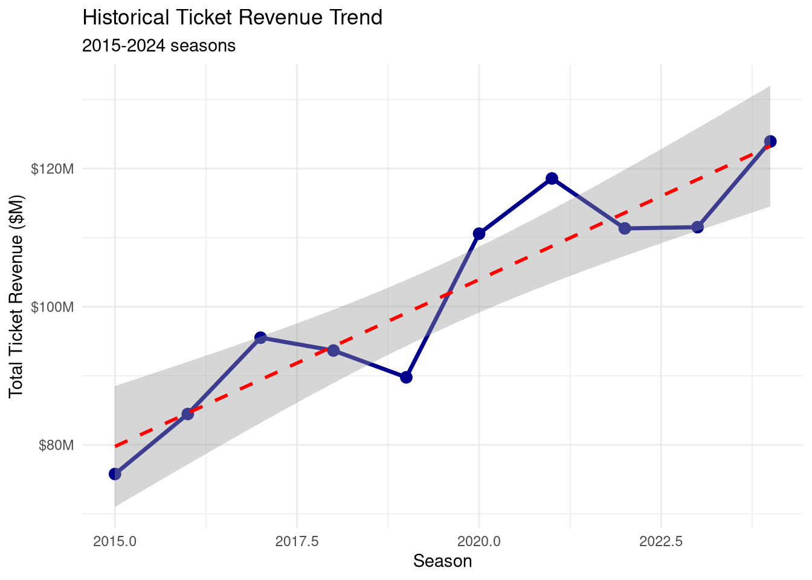
8.7.2.2 Simple Time Series Forecast
# Build linear trend model
trend_model <- lm(total_ticket_revenue ~ season, data = historical_revenue)
summary(trend_model)##
## Call:
## lm(formula = total_ticket_revenue ~ season, data = historical_revenue)
##
## Residuals:
## Min 1Q Median 3Q Max
## -9.3205 -3.5566 -0.3699 4.7333 9.8099
##
## Coefficients:
## Estimate Std. Error t value Pr(>|t|)
## (Intercept) -9660.8009 1436.5684 -6.725 0.000149 ***
## season 4.8340 0.7113 6.796 0.000138 ***
## ---
## Signif. codes: 0 '***' 0.001 '**' 0.01 '*' 0.05 '.' 0.1 ' ' 1
##
## Residual standard error: 6.461 on 8 degrees of freedom
## Multiple R-squared: 0.8523, Adjusted R-squared: 0.8339
## F-statistic: 46.18 on 1 and 8 DF, p-value: 0.0001384# Forecast next 3 seasons
future_seasons <- data.frame(season = 2025:2027)
forecast_simple <- predict(trend_model, newdata = future_seasons, interval = "prediction", level = 0.95)
forecast_results <- cbind(future_seasons, forecast_simple) %>%
rename(predicted_revenue = fit,
lower_95 = lwr,
upper_95 = upr)
cat("\n=== SIMPLE TREND FORECAST ===\n")##
## === SIMPLE TREND FORECAST ===## season predicted_revenue lower_95 upper_95
## 1 2025 128.0982 110.0541 146.1423
## 2 2026 132.9322 114.0146 151.8499
## 3 2027 137.7663 117.8778 157.6547##
## Interpretation:## - 2025 forecast: $ 128.1 Mcat("- 95% Prediction Interval: $", round(forecast_results$lower_95[1], 2), "M to $",
round(forecast_results$upper_95[1], 2), "M\n")## - 95% Prediction Interval: $ 110.05 M to $ 146.14 M## - Average annual growth: $ 4.83 M per year8.7.3 Multi-Variable Revenue Forecasting
Revenue doesn’t just follow a trend—it’s driven by multiple factors:
# Add more predictive variables
historical_revenue <- historical_revenue %>%
mutate(
# Market factors
local_gdp_growth = rnorm(n(), mean = 2.5, sd = 1.2), # Economic growth
unemployment_rate = rnorm(n(), mean = 5.5, sd = 1.5), # Economic health
# Team factors
playoff_appearance = ifelse(win_pct >= 0.600, 1, 0),
star_player = c(0, 0, 1, 1, 0, 1, 1, 1, 1, 1), # Star player on roster
# Pricing strategy
ticket_price_change_pct = (avg_ticket_price - lag(avg_ticket_price)) / lag(avg_ticket_price) * 100
)
# Build comprehensive revenue model
revenue_model_full <- lm(
total_ticket_revenue ~ win_pct + avg_ticket_price + local_gdp_growth +
playoff_appearance + star_player,
data = historical_revenue
)
summary(revenue_model_full)##
## Call:
## lm(formula = total_ticket_revenue ~ win_pct + avg_ticket_price +
## local_gdp_growth + playoff_appearance + star_player, data = historical_revenue)
##
## Residuals:
## 1 2 3 4 5 6 7 8
## 2.18668 -1.22621 -0.51702 -0.38507 -0.96047 0.46183 0.13215 0.02985
## 9 10
## -1.44201 1.72026
##
## Coefficients: (1 not defined because of singularities)
## Estimate Std. Error t value Pr(>|t|)
## (Intercept) -47.8657 7.9114 -6.050 0.001778 **
## win_pct 56.7249 7.1860 7.894 0.000525 ***
## avg_ticket_price 1.6870 0.1180 14.295 3.02e-05 ***
## local_gdp_growth 0.4172 0.5759 0.724 0.501262
## playoff_appearance NA NA NA NA
## star_player -3.1373 2.3251 -1.349 0.235110
## ---
## Signif. codes: 0 '***' 0.001 '**' 0.01 '*' 0.05 '.' 0.1 ' ' 1
##
## Residual standard error: 1.606 on 5 degrees of freedom
## Multiple R-squared: 0.9943, Adjusted R-squared: 0.9897
## F-statistic: 218 on 4 and 5 DF, p-value: 8.552e-06##
## === MODEL INTERPRETATION ===coefficients <- coef(revenue_model_full)
cat("Win percentage effect:", round(coefficients["win_pct"], 2), "M\n")## Win percentage effect: 56.72 Mcat(" → A 10% increase in win_pct (e.g., .500 to .550) adds $",
round(coefficients["win_pct"] * 0.10, 2), "M revenue\n\n")## → A 10% increase in win_pct (e.g., .500 to .550) adds $ 5.67 M revenue## Ticket price effect: 1.687 M per $1 increase## → $5 price increase adds $ 8.43 M revenue## Playoff appearance effect: +$ NA M## Star player effect: +$ -3.14 M## Model R-squared: 0.994cat("Model explains", round(summary(revenue_model_full)$r.squared * 100, 1),
"% of revenue variation\n")## Model explains 99.4 % of revenue variation8.7.3.1 Scenario-Based Forecasting
# Create multiple scenarios for 2025 season
scenarios_2025 <- data.frame(
scenario = c("Conservative", "Base Case", "Optimistic"),
# Team performance assumptions
win_pct = c(0.500, 0.550, 0.650),
playoff_appearance = c(0, 0, 1),
star_player = c(0, 1, 1),
# Pricing assumptions
avg_ticket_price = c(68, 70, 72),
# Economic assumptions
local_gdp_growth = c(1.5, 2.5, 3.5),
unemployment_rate = c(6.5, 5.5, 4.5)
)
# Generate forecasts for each scenario
scenarios_2025$forecast_revenue <- predict(revenue_model_full, newdata = scenarios_2025)
# Add prediction intervals
predictions_with_intervals <- predict(
revenue_model_full,
newdata = scenarios_2025,
interval = "prediction",
level = 0.90
)
scenarios_2025 <- cbind(
scenarios_2025,
lower_90 = predictions_with_intervals[, "lwr"],
upper_90 = predictions_with_intervals[, "upr"]
)
cat("\n=== 2025 REVENUE FORECAST SCENARIOS ===\n")##
## === 2025 REVENUE FORECAST SCENARIOS ===scenarios_2025 %>%
select(scenario, win_pct, avg_ticket_price, forecast_revenue, lower_90, upper_90) %>%
mutate(
forecast_revenue = round(forecast_revenue, 2),
lower_90 = round(lower_90, 2),
upper_90 = round(upper_90, 2)
) %>%
print()## scenario win_pct avg_ticket_price forecast_revenue lower_90 upper_90
## 1 Conservative 0.50 68 95.84 88.14 103.53
## 2 Base Case 0.55 70 99.33 90.40 108.25
## 3 Optimistic 0.65 72 108.79 101.25 116.33# Visualize scenarios
ggplot(scenarios_2025, aes(x = scenario, y = forecast_revenue, fill = scenario)) +
geom_col() +
geom_errorbar(aes(ymin = lower_90, ymax = upper_90), width = 0.2) +
geom_text(aes(label = paste0("$", round(forecast_revenue, 1), "M")), vjust = -3) +
labs(title = "2025 Revenue Forecast Scenarios",
subtitle = "With 90% prediction intervals",
x = "Scenario", y = "Forecasted Revenue ($M)") +
scale_y_continuous(labels = dollar_format(suffix = "M")) +
theme_minimal() +
theme(legend.position = "none")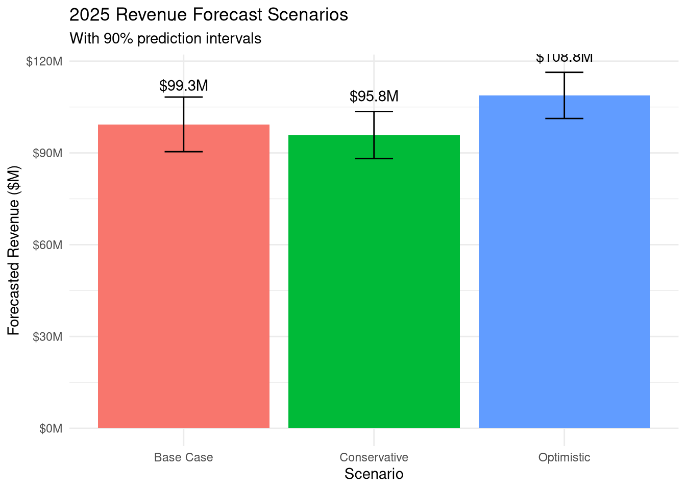
8.7.4 Concession and Merchandise Revenue Forecasting
Concession and merchandise revenue correlates with attendance but has additional drivers:
# Historical concession data
concession_data <- historical_revenue %>%
mutate(
total_attendance = avg_attendance * games_played,
per_cap_concession = rnorm(n(), mean = 12.50, sd = 1.25), # Per-fan spending
total_concession_revenue = (total_attendance * per_cap_concession) / 1000000, # In millions
# Merchandise is more sensitive to team performance
per_cap_merchandise = ifelse(playoff_appearance == 1,
rnorm(n(), 8, 0.8),
rnorm(n(), 5, 0.5)),
total_merch_revenue = (total_attendance * per_cap_merchandise) / 1000000
)
# Build concession forecast model
concession_model <- lm(total_concession_revenue ~ avg_attendance + win_pct,
data = concession_data)
# Build merchandise forecast model
merch_model <- lm(total_merch_revenue ~ avg_attendance + win_pct + playoff_appearance,
data = concession_data)
cat("=== CONCESSION REVENUE MODEL ===\n")## === CONCESSION REVENUE MODEL ===##
## Call:
## lm(formula = total_concession_revenue ~ avg_attendance + win_pct,
## data = concession_data)
##
## Residuals:
## Min 1Q Median 3Q Max
## -3.8109 -0.5630 0.4261 1.1655 3.1936
##
## Coefficients:
## Estimate Std. Error t value Pr(>|t|)
## (Intercept) 28.823134 46.998961 0.613 0.559
## avg_attendance -0.000533 0.001956 -0.273 0.793
## win_pct 16.745560 40.199855 0.417 0.689
##
## Residual standard error: 2.622 on 7 degrees of freedom
## Multiple R-squared: 0.1411, Adjusted R-squared: -0.1043
## F-statistic: 0.5751 on 2 and 7 DF, p-value: 0.5871##
## === MERCHANDISE REVENUE MODEL ===##
## Call:
## lm(formula = total_merch_revenue ~ avg_attendance + win_pct +
## playoff_appearance, data = concession_data)
##
## Residuals:
## Min 1Q Median 3Q Max
## -1.9013 -0.8585 0.1045 0.8818 2.2570
##
## Coefficients: (1 not defined because of singularities)
## Estimate Std. Error t value Pr(>|t|)
## (Intercept) -27.113726 26.854366 -1.010 0.346
## avg_attendance 0.001617 0.001118 1.447 0.191
## win_pct -30.647993 22.969478 -1.334 0.224
## playoff_appearance NA NA NA NA
##
## Residual standard error: 1.498 on 7 degrees of freedom
## Multiple R-squared: 0.2691, Adjusted R-squared: 0.06029
## F-statistic: 1.289 on 2 and 7 DF, p-value: 0.3338# Forecast 2025 ancillary revenue
forecast_2025_ancillary <- scenarios_2025 %>%
mutate(
# Estimate attendance based on win_pct and price
avg_attendance = 50000 - (avg_ticket_price * 150) + (win_pct * 20000)
)
forecast_2025_ancillary$concession_forecast <- predict(
concession_model,
newdata = forecast_2025_ancillary
)
forecast_2025_ancillary$merch_forecast <- predict(
merch_model,
newdata = forecast_2025_ancillary
)
cat("\n=== 2025 ANCILLARY REVENUE FORECASTS ===\n")##
## === 2025 ANCILLARY REVENUE FORECASTS ===forecast_2025_ancillary %>%
select(scenario, concession_forecast, merch_forecast) %>%
mutate(
total_ancillary = concession_forecast + merch_forecast,
concession_forecast = round(concession_forecast, 2),
merch_forecast = round(merch_forecast, 2),
total_ancillary = round(total_ancillary, 2)
) %>%
print()## scenario concession_forecast merch_forecast total_ancillary
## 1 Conservative 10.65 38.10 48.76
## 2 Base Case 11.12 37.70 48.82
## 3 Optimistic 11.89 37.39 49.278.7.5 Season Ticket Renewal Forecasting
Predicting season ticket holder renewal rates and revenue:
# Historical season ticket data
sth_data_historical <- data.frame(
season = 2019:2024,
total_sth_accounts = c(8200, 8450, 8100, 7800, 8300, 8650),
avg_account_value = c(2850, 2950, 3050, 3150, 3250, 3350),
renewal_rate = c(0.87, 0.89, 0.84, 0.81, 0.88, 0.91),
team_win_pct = c(0.585, 0.634, 0.463, 0.512, 0.610, 0.671),
prior_season_playoff = c(1, 1, 0, 0, 1, 1)
) %>%
mutate(
sth_revenue = (total_sth_accounts * avg_account_value) / 1000000,
new_accounts = round(total_sth_accounts - (lag(total_sth_accounts) * lag(renewal_rate)))
)
# Model renewal rate
renewal_model <- lm(renewal_rate ~ team_win_pct + prior_season_playoff,
data = sth_data_historical)
summary(renewal_model)##
## Call:
## lm(formula = renewal_rate ~ team_win_pct + prior_season_playoff,
## data = sth_data_historical)
##
## Residuals:
## 1 2 3 4 5 6
## -0.008807 0.000544 0.020325 -0.020325 -0.004240 0.012503
##
## Coefficients:
## Estimate Std. Error t value Pr(>|t|)
## (Intercept) 0.71905 0.12859 5.592 0.0113 *
## team_win_pct 0.21733 0.26235 0.828 0.4682
## prior_season_playoff 0.03262 0.03963 0.823 0.4708
## ---
## Signif. codes: 0 '***' 0.001 '**' 0.01 '*' 0.05 '.' 0.1 ' ' 1
##
## Residual standard error: 0.01896 on 3 degrees of freedom
## Multiple R-squared: 0.8349, Adjusted R-squared: 0.7249
## F-statistic: 7.588 on 2 and 3 DF, p-value: 0.06705##
## === RENEWAL RATE MODEL ===cat("Each 0.10 increase in win_pct increases renewal rate by",
round(coef(renewal_model)["team_win_pct"] * 0.10 * 100, 2), "percentage points\n")## Each 0.10 increase in win_pct increases renewal rate by 2.17 percentage pointscat("Playoff teams see renewal rate", round(coef(renewal_model)["prior_season_playoff"] * 100, 2),
"percentage points higher\n\n")## Playoff teams see renewal rate 3.26 percentage points higher# Forecast 2025 season ticket revenue
sth_forecast_2025 <- data.frame(
scenario = c("Conservative", "Base", "Optimistic"),
team_win_pct = c(0.500, 0.550, 0.650),
prior_season_playoff = c(0, 0, 1)
)
sth_forecast_2025$predicted_renewal_rate <- predict(renewal_model, newdata = sth_forecast_2025)
sth_forecast_2025 <- sth_forecast_2025 %>%
mutate(
# Current accounts
current_accounts = 8650,
# Predicted renewals
predicted_renewals = round(current_accounts * predicted_renewal_rate),
# Assume new accounts based on team success
estimated_new_accounts = round(team_win_pct * 500),
# Total accounts
total_2025_accounts = predicted_renewals + estimated_new_accounts,
# Revenue projection (assuming 3% price increase)
avg_account_value_2025 = 3450,
projected_sth_revenue = (total_2025_accounts * avg_account_value_2025) / 1000000
)
cat("=== 2025 SEASON TICKET FORECAST ===\n")## === 2025 SEASON TICKET FORECAST ===sth_forecast_2025 %>%
select(scenario, predicted_renewal_rate, predicted_renewals,
estimated_new_accounts, total_2025_accounts, projected_sth_revenue) %>%
mutate(
predicted_renewal_rate = round(predicted_renewal_rate * 100, 1),
projected_sth_revenue = round(projected_sth_revenue, 2)
) %>%
print()## scenario predicted_renewal_rate predicted_renewals estimated_new_accounts
## 1 Conservative 82.8 7160 250
## 2 Base 83.9 7254 275
## 3 Optimistic 89.3 7724 325
## total_2025_accounts projected_sth_revenue
## 1 7410 25.56
## 2 7529 25.98
## 3 8049 27.778.7.6 Comprehensive Revenue Forecast Dashboard
Combining all revenue streams:
# Comprehensive 2025 forecast
comprehensive_forecast <- scenarios_2025 %>%
select(scenario, forecast_revenue) %>%
rename(ticket_revenue = forecast_revenue) %>%
left_join(
forecast_2025_ancillary %>%
select(scenario, concession_forecast, merch_forecast),
by = "scenario"
) %>%
left_join(
sth_forecast_2025 %>%
select(scenario, projected_sth_revenue) %>%
rename(season_ticket_revenue = projected_sth_revenue),
by = "scenario"
) %>%
mutate(
# Add other revenue streams (sponsorship, parking, etc.)
sponsorship_revenue = rnorm(3, mean = 15, sd = 1), # Relatively stable
parking_revenue = rnorm(3, mean = 4.5, sd = 0.3),
# Total revenue
total_revenue = ticket_revenue + concession_forecast + merch_forecast +
season_ticket_revenue + sponsorship_revenue + parking_revenue
)
cat("\n=== COMPREHENSIVE 2025 REVENUE FORECAST ===\n")##
## === COMPREHENSIVE 2025 REVENUE FORECAST ===## scenario ticket_revenue concession_forecast merch_forecast
## 1 Conservative 95.84 10.65 38.10
## 2 Base Case 99.33 11.12 37.70
## 3 Optimistic 108.79 11.89 37.39
## season_ticket_revenue sponsorship_revenue parking_revenue total_revenue
## 1 25.56 15.21 4.28 189.65
## 2 NA 14.64 4.09 NA
## 3 27.77 15.76 4.63 206.22##
## === REVENUE BREAKDOWN (Base Case) ===base_case <- comprehensive_forecast %>%
filter(scenario == "Base Case") %>%
select(-scenario, -total_revenue) %>%
pivot_longer(everything(), names_to = "revenue_stream", values_to = "amount") %>%
mutate(
percentage = round((amount / sum(amount)) * 100, 1)
) %>%
arrange(desc(amount))
print(base_case)## # A tibble: 6 × 3
## revenue_stream amount percentage
## <chr> <dbl> <dbl>
## 1 ticket_revenue 99.3 NA
## 2 merch_forecast 37.7 NA
## 3 sponsorship_revenue 14.6 NA
## 4 concession_forecast 11.1 NA
## 5 parking_revenue 4.09 NA
## 6 season_ticket_revenue NA NA# Visualize revenue composition
ggplot(base_case, aes(x = reorder(revenue_stream, amount), y = amount, fill = revenue_stream)) +
geom_col() +
geom_text(aes(label = paste0("$", round(amount, 1), "M\n(",
percentage, "%)")),
hjust = -0.1, size = 3) +
coord_flip() +
labs(title = "2025 Revenue Forecast Composition (Base Case)",
x = "Revenue Stream", y = "Revenue ($M)") +
scale_y_continuous(labels = dollar_format(suffix = "M"),
expand = expansion(mult = c(0, 0.15))) +
theme_minimal() +
theme(legend.position = "none")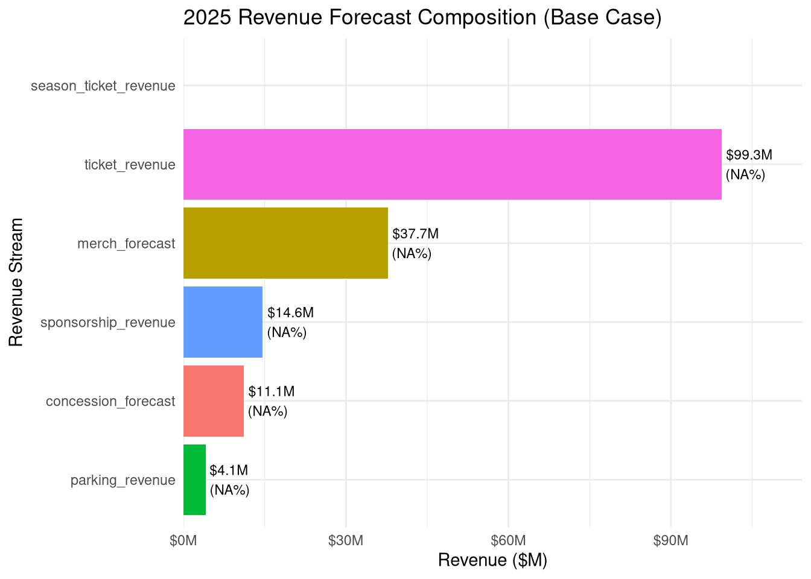
8.7.7 Forecast Accuracy and Monitoring
Track forecast vs. actual performance:
# Historical forecast vs. actual
forecast_accuracy <- data.frame(
season = 2020:2024,
forecasted_revenue = c(78.5, 72.3, 85.2, 88.1, 92.5),
actual_revenue = c(76.2, 70.8, 87.5, 86.9, 94.2)
) %>%
mutate(
forecast_error = actual_revenue - forecasted_revenue,
absolute_error = abs(forecast_error),
percent_error = (forecast_error / actual_revenue) * 100,
absolute_percent_error = abs(percent_error)
)
cat("\n=== FORECAST ACCURACY ANALYSIS ===\n")##
## === FORECAST ACCURACY ANALYSIS ===## season forecasted_revenue actual_revenue forecast_error absolute_error
## 1 2020 78.5 76.2 -2.3 2.3
## 2 2021 72.3 70.8 -1.5 1.5
## 3 2022 85.2 87.5 2.3 2.3
## 4 2023 88.1 86.9 -1.2 1.2
## 5 2024 92.5 94.2 1.7 1.7
## percent_error absolute_percent_error
## 1 -3.018373 3.018373
## 2 -2.118644 2.118644
## 3 2.628571 2.628571
## 4 -1.380898 1.380898
## 5 1.804671 1.804671# Calculate accuracy metrics
mae <- mean(forecast_accuracy$absolute_error) # Mean Absolute Error
mape <- mean(forecast_accuracy$absolute_percent_error) # Mean Absolute Percentage Error
rmse <- sqrt(mean(forecast_accuracy$forecast_error^2)) # Root Mean Square Error
cat("\n=== FORECAST ERROR METRICS ===\n")##
## === FORECAST ERROR METRICS ===## Mean Absolute Error (MAE): $ 1.8 M## Mean Absolute Percentage Error (MAPE): 2.19 %## Root Mean Square Error (RMSE): $ 1.85 Mif (mape < 5) {
cat("Forecast accuracy: EXCELLENT (MAPE < 5%)\n")
} else if (mape < 10) {
cat("Forecast accuracy: GOOD (MAPE < 10%)\n")
} else {
cat("Forecast accuracy: NEEDS IMPROVEMENT (MAPE >= 10%)\n")
}## Forecast accuracy: EXCELLENT (MAPE < 5%)# Visualize forecast accuracy
ggplot(forecast_accuracy, aes(x = season)) +
geom_line(aes(y = forecasted_revenue, color = "Forecast"), size = 1.2) +
geom_line(aes(y = actual_revenue, color = "Actual"), size = 1.2) +
geom_point(aes(y = forecasted_revenue, color = "Forecast"), size = 3) +
geom_point(aes(y = actual_revenue, color = "Actual"), size = 3) +
scale_color_manual(values = c("Forecast" = "blue", "Actual" = "darkgreen")) +
labs(title = "Revenue Forecast vs. Actual Performance",
subtitle = paste0("MAPE: ", round(mape, 1), "%"),
x = "Season", y = "Revenue ($M)", color = "") +
scale_y_continuous(labels = dollar_format(suffix = "M")) +
theme_minimal() +
theme(legend.position = "bottom")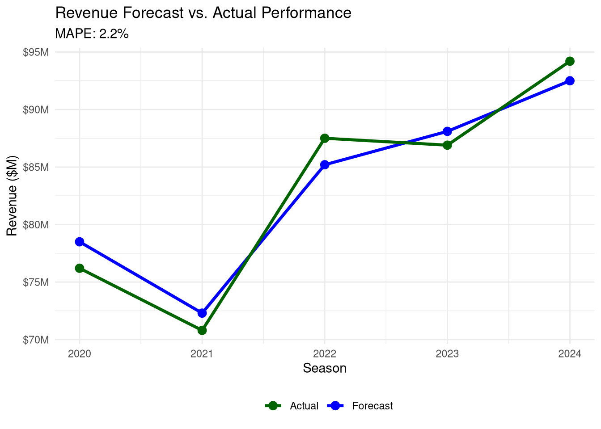
8.7.8 Best Practices for Revenue Forecasting
# 1. USE MULTIPLE METHODS
# - Simple trend forecast (baseline)
# - Regression-based forecast (driver-based)
# - Scenario analysis (best/worst/likely)
# 2. UPDATE FORECASTS REGULARLY
# - Monthly: Update based on actual performance
# - Quarterly: Revise full-year forecast
# - Annually: Build next-year budget
# 3. TRACK FORECAST ACCURACY
# - Calculate forecast error metrics (MAE, MAPE, RMSE)
# - Identify systematic biases (always over/under forecasting)
# - Refine models based on errors
# 4. CONSIDER EXTERNAL FACTORS
# - Economic conditions (GDP, unemployment, consumer confidence)
# - Competitive landscape (new venues, teams)
# - Pricing strategy changes
# - Facility renovations
# 5. USE CONFIDENCE INTERVALS
# - Always report prediction intervals, not just point estimates
# - Wider intervals for longer-term forecasts
# - Account for uncertainty in planning
# 6. SEGMENT FORECASTS
# - Forecast by revenue stream (tickets, concessions, etc.)
# - Forecast by customer segment (season tickets, groups, single-game)
# - Forecast by seating section (premium, standard, value)
# 7. DOCUMENT ASSUMPTIONS
# - Team performance expectations
# - Pricing strategy
# - Economic assumptions
# - Allows stakeholders to understand forecast drivers8.8 Practice Exercises: Revenue Forecasting
- Historical Trend Analysis:
- Create 10 years of historical revenue data
- Build simple linear trend model
- Forecast next 3 years
- Calculate 95% prediction intervals
- Multi-Variable Forecast:
- Add team performance, ticket prices, and economic variables
- Build multiple regression model
- Create 3 scenarios (conservative, base, optimistic)
- Compare results to simple trend forecast
- Ancillary Revenue Forecast:
- Model concession and merchandise revenue
- Link to attendance and team performance
- Forecast next season’s ancillary revenue
- Calculate total revenue (ticket + ancillary)
- Season Ticket Modeling:
- Create historical renewal rate data
- Model renewal rate as function of performance
- Forecast next season’s season ticket revenue
- Estimate impact of 5% price increase
- Forecast Accuracy:
- Compare forecasts to actual results
- Calculate MAE, MAPE, and RMSE
- Identify whether forecasts are systematically biased
- Recommend model improvements
8.9 Practice Exercises: Pricing Analytics
- Basic Pricing Model:
- Create ticket price and attendance data for 40 games
- Build simple linear regression model
- Calculate price elasticity
- Find revenue-maximizing price
- Multi-Factor Model:
- Add opponent quality, day of week, and promotions to your data
- Build multiple regression model
- Compare R-squared to simple model
- Interpret each coefficient
- Dynamic Pricing:
- Create 5 different game scenarios
- Test prices from $30-$80 for each
- Find optimal price for each scenario
- Explain why optimal prices differ
- Section Pricing:
- Create pricing data for 4-6 stadium sections
- Calculate utilization and revenue per section
- Identify under-priced (>95% sold) and over-priced (<70% sold) sections
- Make pricing recommendations
- Season Ticket Analysis:
- Design 3-4 season ticket packages
- Calculate appropriate discount from single-game prices
- Test impact of 5% price increase
- Estimate revenue impact accounting for churn
8.10 Practice Exercises
8.10.1 Exercise 1: Correlation Analysis
Using the Lahman baseball database, analyze the relationship between team payroll and wins:
# Load data
data(Salaries)
data(Teams)
# Calculate team payroll by year
team_payroll <- Salaries %>%
group_by(teamID, yearID) %>%
summarize(total_payroll = sum(salary))
# Merge with team performance
team_data <- Teams %>%
inner_join(team_payroll, by = c("teamID", "yearID"))
# Test correlation between payroll and wins
# YOUR CODE HERE8.10.4 Exercise 4: Applied Analysis
Choose a sport business question that interests you:
- State a research question involving relationships between variables
- Collect or simulate appropriate data
- Conduct correlation analysis
- Build a regression model
- Interpret results in business context
- Make recommendations based on findings
8.11 Chapter Summary
8.11.1 Key Concepts
- Correlation:
- Measures strength and direction of relationships
- Ranges from -1 (perfect negative) to +1 (perfect positive)
- Pearson’s r for linear relationships between continuous variables
- Spearman’s rho for ranked or non-linear monotonic relationships
- Correlation does NOT imply causation
- Simple Linear Regression:
- Predicts one variable from another
- Equation: Y = b₀ + b₁X
- b₁ (slope) shows how Y changes with X
- R² indicates proportion of variance explained
- P-values test statistical significance
- Multiple Regression:
- Predicts one variable from multiple predictors
- Each coefficient shows unique contribution of a predictor
- Controls for confounding variables
- Adjusted R² used for model comparison
- Check assumptions with diagnostic plots
- Sport Business Applications:
- Attendance prediction from multiple factors
- Salary prediction from performance metrics
- Performance analysis using correlation matrices
- Data-driven decision making
8.11.2 Important Considerations
- Always visualize relationships before testing
- Check assumptions: linearity, normality, equal variance
- Consider practical significance alongside statistical significance
- Be cautious with causation: correlation ≠ causation
- Use appropriate methods: Pearson vs. Spearman, simple vs. multiple regression
- Validate predictions: Use holdout samples or cross-validation
8.11.3 R Functions Reference
| Function | Purpose |
|---|---|
cor() |
Calculate correlation coefficient |
cor.test() |
Test correlation significance |
lm() |
Build linear regression model |
summary() |
View model results |
predict() |
Make predictions from model |
coef() |
Extract coefficients |
confint() |
Calculate confidence intervals |
anova() |
Compare models |
scale() |
Standardize variables |
plot(model) |
Diagnostic plots |
8.12 References
- Cohen, J. (1988). Statistical Power Analysis for the Behavioral Sciences (2nd ed.). Lawrence Erlbaum Associates.
- James, G., Witten, D., Hastie, T., & Tibshirani, R. (2013). An Introduction to Statistical Learning. Springer.
- Marchi, M., & Albert, J. (2016). Analyzing Baseball Data with R (2nd ed.). CRC Press.
- Field, A., Miles, J., & Field, Z. (2012). Discovering Statistics Using R. SAGE Publications.
- Kutner, M. H., Nachtsheim, C. J., Neter, J., & Li, W. (2005). Applied Linear Statistical Models (5th ed.). McGraw-Hill.